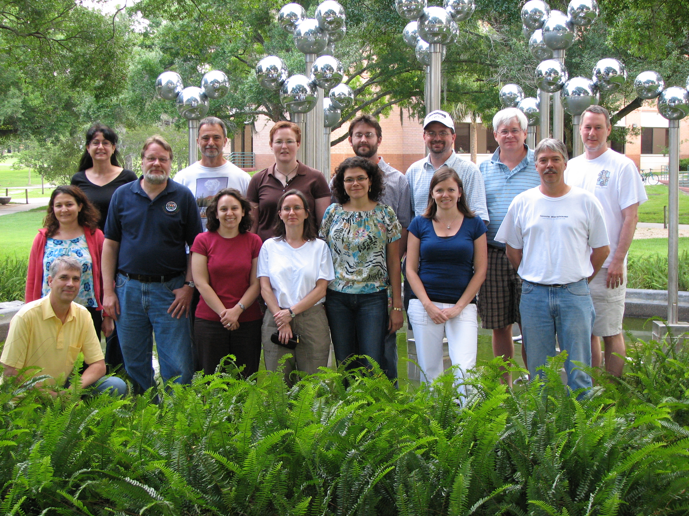
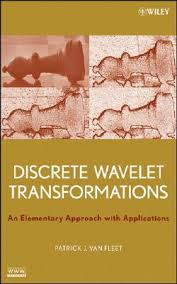

Course Overview

 Welcome to the Wavelets Webpage at the University of St. Thomas. Two National Science Foundation (DUE0442684 and DUE0717662) grants have supported the development of an undergraduate course on wavelets and their applications, two texts, software, final projects, and the Wavelets in Undergraduate Website. The course has been taught twelve times at the University of St. Thomas and world wide. Prerequisite knowledge is the calculus sequence and familiarity with matrix arithmetic. The course makes heavy use of Mathematica (or MATLAB) and follows an applications-first model: Students are introduced to some rudimentary wavelet transforms, quantization tools, and coding schemes and then are immediately immersed in applications such as image compression and image boundary detection. The applications provide strong motivation to learn the more advanced mathematics necessary to build better image processing tools. Other applications introduced along the way are audio de-noising and image segmentation. The course concludes with final projects where students can learn about new applications or delve deeper into some of the more theoretical aspects of the topic.
Welcome to the Wavelets Webpage at the University of St. Thomas. Two National Science Foundation (DUE0442684 and DUE0717662) grants have supported the development of an undergraduate course on wavelets and their applications, two texts, software, final projects, and the Wavelets in Undergraduate Website. The course has been taught twelve times at the University of St. Thomas and world wide. Prerequisite knowledge is the calculus sequence and familiarity with matrix arithmetic. The course makes heavy use of Mathematica (or MATLAB) and follows an applications-first model: Students are introduced to some rudimentary wavelet transforms, quantization tools, and coding schemes and then are immediately immersed in applications such as image compression and image boundary detection. The applications provide strong motivation to learn the more advanced mathematics necessary to build better image processing tools. Other applications introduced along the way are audio de-noising and image segmentation. The course concludes with final projects where students can learn about new applications or delve deeper into some of the more theoretical aspects of the topic.
Workshops
 The grants also provided partial support for six workshops or minicourses for faculty interested in teaching a course on wavelets at their home institutions. Four of these workshops were conducted through the Mathematical Association of America's Professional Enhancement Program (PREP). During these workshops, faculty members learned about wavelets, software implementation, applications of wavelets, final project development, and strategies for teaching the course. the links at left contain lecture slides and many labs (in Mathematica and MATLAB) used by the participants.
{kind=link}
Books
 I have written a text, Discrete Wavelet Transformations: An Elementary Approach with Applications, published on January 8, 2008, for an introductory course on discrete wavelets and applications.
{kind=link}
 A second book, Wavelet Theory: An Elementary Approach with Applications, co- authored with David Ruch, was published on October 26, 2009. This book is intended for use as a text in a topics course for advanced undergraduate or graduate students, or as a reference for professionals interested in an introduction to the elementary theory of wavelets.
A second book, Wavelet Theory: An Elementary Approach with Applications, co- authored with David Ruch, was published on October 26, 2009. This book is intended for use as a text in a topics course for advanced undergraduate or graduate students, or as a reference for professionals interested in an introduction to the elementary theory of wavelets.
You can view the table of contents, read an overview, learn about the intended audience, and see who is using the texts by clicking the appropriate link on the right menu.
Resources
 The DiscreteWavelets Package is available in Mathematica and MATLAB. This add-on allows students or researchers to further explore discrete wavelet transformations and their applications. Also available under Resources at right are several labs for use with a discrete wavelets course, the Wavelets in Undergraduate Education (WUE) website and links to other wavelet pages.
The DiscreteWavelets Package is available in Mathematica and MATLAB. This add-on allows students or researchers to further explore discrete wavelet transformations and their applications. Also available under Resources at right are several labs for use with a discrete wavelets course, the Wavelets in Undergraduate Education (WUE) website and links to other wavelet pages.